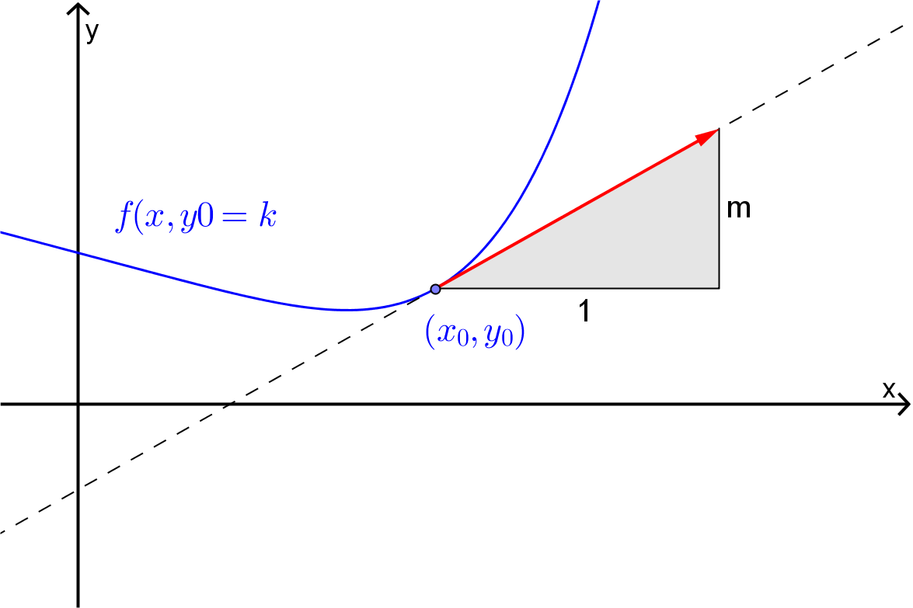
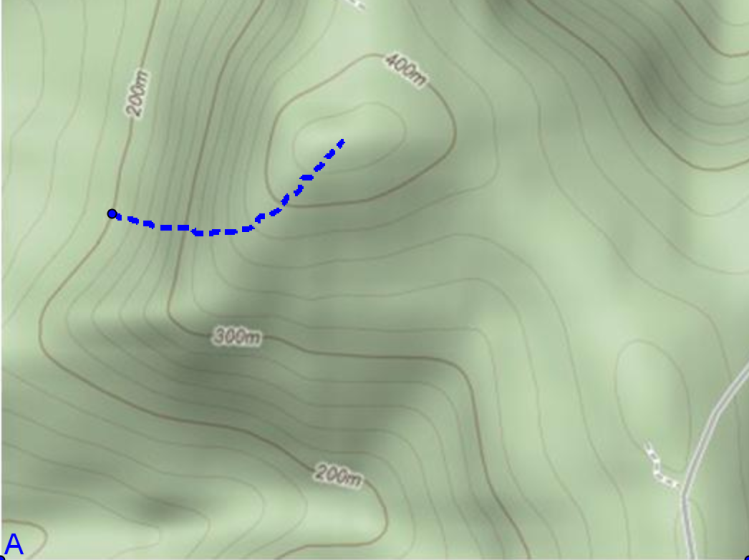

Section 6.1 Directional Derivatives
Firstly, note that \(2D\) vectors are a convenient way to specify directions in the \(xy\)-plane. For example, we could say the slope of the function in the direction of the vector \(\bm{i} = \langle 1, 0 \rangle\) is \(f_x(x_0,y_0)\) while in the direction of the vector \(\bm{j} = \langle 0,1 \rangle\) it is \(f_y(x_0,y_0)\text{.}\) Thus the problem we are looking at is that of finding the slope of the function at the point \((x,y) = (x_0,y_0)\) in the direction given by some vector \(\bm{u} = \langle u_1, u_2 \rangle\text{.}\) Mathematically, we would say that we are trying to find the directional derivative of the function \(f(x,y)\) at the point \((x_0,y_0)\) in the direction \(\bm{u}\text{.}\) The notation that we use to denote this directional derivative is
One way to approach the problem of finding the directional derivative \(D_{\bm{u}}f(x_0,y_0)\) is to use the tangent plane to the function at the point \((x_0,y_0)\text{,}\) i.e.
Then the slope of the function \(f(x,y)\) in the direction of \(\bm{u}\) is the slope of \(L(x,y)\) in that direction. If \(\hat{\bm{u}} = \langle u_1, u_2 \rangle\) is a unit vector in the direction of \(\bm{u}\) then the required slope is the amount by which the value of \(L\) changes as the independent variables change from \((x_0,y_0)\) to \((x_0+u_1,y_0+u_2)\text{,}\) i.e.
Example 6.1.1.
Consider the function \(z(x,y) = 5 - \dfrac{x^2+y^2}{2}\text{.}\) Figure 2 shows the graph of this function along with its the tangent plane at \((x,y) = (2,1)\text{.}\) Also shown on the diagram are the vectors \(\bm{u} = \langle 2,2 \rangle\) and \(\bm{v} = \langle 2,-1 \rangle\) drawn in the \(xy\)-plane with their tails at the point \((x,y) = (2,1)\text{.}\) Then the directional derivative \(D_{\bm{u}}(z(2,1))\) will be the slope of the line joining the points \((2,1,z(2,1))\) and \((4,3,L(4,3))\) while the directional derivative \(D_{\bm{v}}(f(2,1))\) will be the slope of the line joining the points \((2,1,z(2,1))\) and \((4,0,L(4,0))\text{.}\)
To summarise:
Definition 6.1.3. Directional Derivative.
The directional derivative of the differentiable function \(f(x,y)\) at the point \((x_0,y_0)\) in the direction of the unit vector \(\hat{\bm{u}} = \langle u_1, u_2 \rangle\) is given by
Example 6.1.4.
Find the directional derivative of \(f(x,y) = y\ln(x)\) at \((1,-3)\) in the direction \(\bm{u} = \langle -4, 3 \rangle\text{.}\)
For the given function
Thus
Now the unit vector in the direction of \(\langle -4,3 \rangle\) is
Thus the required directional derivative is
Example 6.1.5.
Find the directional derivative of \(f(x,y) = \sin(x+2y)\) in the direction of the angle (from the positive \(x\)-axis) \(\theta = \dfrac{3 \pi}{4}\text{.}\)
For the given function
Now, the unit vector in the direction of the angle \(\theta = \dfrac{3 \pi}{4}\) is
Thus the required directional derivative is
Note that the directional derivative \(D_\bm{u} f(x_0,y_0)\) can be expressed in the terms of the scalar product if we use the following definition.
Definition 6.1.6. Gradient Vector.
The vector
is called the gradient vector of \(f(x,y)\) at \((x_0,y_0)\text{.}\)
With this definition the directional derivative can be written as:
Example 6.1.7.
Find the gradient vector for the function \(f(x,y) = e^{-x} \sin(y)\text{.}\) Hence find \(\nabla f(0,\pi/3)\) and the directional derivative in the direction of the origin.
For the given function
and so the gradient vector is
Thus
Now, the unit vector in the direction of the origin from the point \(\left( 0, \dfrac{\pi}{3} \right)\) is
Thus the required directional derivative is
The gradient vector has some interesting facts associated with it. Note in the following we are assuming that \(\nabla f \neq \langle 0, 0 \rangle\text{.}\)
-
\(\nabla f\) points in the direction in which the directional derivative takes on its largest value. To see this, note that
\begin{align*} D_{\bm{u}} f(x,y) \amp = \nabla f(x,y) \cdot \hat{\bm{u}}\\ \amp = \| \nabla f \| \| \hat{\bm{u}} \| \cos(\theta)\\ \amp = \| \nabla f \| \cos(\theta) \end{align*}At a given point \(\| \nabla f \|\) is fixed and so the largest value of \(D_{\bm{u}} f(x,y)\) will occur when \(\cos(\theta) = 1\text{,}\) i.e. when \(\theta = 0\) or put another way, when \(\hat{\bm{u}}\) is parallel to \(\nabla f\text{.}\) We can also see from this that the largest value that the directional derivative can take is \(\| \nabla f \|\text{.}\)
Similarly, the directional derivative takes on its smallest value in the direction of \(-\nabla f\) and has value \(- \| \nabla f \|\text{.}\)
-
\(\nabla f(x_0,y_0)\) is orthogonal (i.e. at right angles) to the level curve passing through \((x_0,y_0)\text{.}\)
For the function \(z = f(x,y)\) the level curve passing through the point \((x_0,y_0)\) is given
\begin{equation*} f(x,y) = f(x_0,y_0)\text{.} \end{equation*}Now, as shown in Figure Figure 6.1.8, a vector parallel to the tangent to this curve at the point \((x_0,y_0)\) will be \(\left \langle 1, \dfrac{dy}{dx} \right \rangle\text{.}\)
Figure 6.1.8. Thus a vector normal to the curve at the point \((x_0,y_0)\) will be \(\left \langle \dfrac{f_x(x_0,y_0)}{f_y(x_0,y_0)}, 1 \right \rangle\text{,}\) which is parallel to \(\nabla f(x_0,y_0)\text{.}\)
Notice that since \(\nabla f(x_0,y_0)\) is orthogonal to the level curve passing through the point \((x_0,y_0)\) and that \(\nabla f (x_0,y_0)\) is the direction in which the directional derivative takes on its largest value, the “path of steepest ascent” on any surface \(z=f(x,y)\) is always at right angles to its contours. See the following diagram for an attempt to show this.
Figure 6.1.9.
Example 6.1.10.
For the function \(f(x,y) = x^2y^3-3x\) find the directions in which the directional derivative at the point \((-2,4)\) is maximised, minimised and \(0\text{.}\)
For the given function
and so
Thus the directional derivative, \(D_{\hat{\bm{u}}} f(-2,4)\text{,}\) will be maximised in the direction
and minimised in the direction
Finally \(D_{\hat{\bm{u}}} f(-2,4)\) will be \(0\) when
i.e. when
or some scalar multiple of this.
Example 6.1.11.
For the function \(f(x,y) = x^2-y\) find the level curve, the tangent line and the gradient vector at the point \((-3,1)\text{.}\)
Since \(f(-3,1)=8\) the level curve through the point \((-3,1)\) is \(x^2-y=8\) or \(y=x^2-8\text{.}\) We can find the equation of the tangent by standard calculus to obtain
Next, the gradient vector is
As can be seen in the diagram below, the gradient vector is orthogonal to the level curve.
Example 6.1.13.
Suppose you are climbing a hill whose shape is given by the equation
and you are standing at the point with coordinates \((60,100,764)\text{.}\)
In which direction should you proceed initially in order to be ascending most rapidly?
If you climb in that direction, at what angle to the horizontal will you be climbing initially?
Since we want to travel on the path of steepest ascent we will want to head in the direction of \(\nabla f(60,100)\text{.}\) Now
\begin{equation*} \nabla f(x,y) = \langle -0.02x, -0.04y \rangle \end{equation*}and hence\begin{equation*} \nabla f (60,100) = \langle-1.2,-4 \rangle\text{.} \end{equation*}In this direction we know that
\begin{equation*} D_{\hat{\bm{u}}} f(60,100) = \| \nabla f(60,100) \| \simeq 4.17\text{.} \end{equation*}Thus the angle, \(\theta\text{,}\) to the horizontal will be\begin{equation*} \theta = \tan^{-1} (4.17) \simeq 1.33^{c}\text{.} \end{equation*}
Exercises Example Tasks
1.
Find the directional derivative for \(f(x,y) = (x-2y)^2 + 5x^2\) at the point \((-3,1)\) in the direction of the point \((1,4)\text{.}\)
2.
Find the maximum value of the rate of change of \(h(s,t) = \dfrac{1}{\sqrt{s^2+t^2}}\) at \((3,4)\text{.}\)
3.
For the curve \(e^x \ln (y) - xy = 0\) use the gradient vector of a two variable function to find the tangent line and the normal line at the point \((2,e^2)\text{.}\)
4.
For the following contour plot for some unspecified function of two variables estimate the sign of the directional derivatives at:
The point \(A\) and in the direction of \(\bm{u} = \langle 1,2 \rangle\text{.}\)
The point \(B\) and in the direction of \(\bm{w} = \langle -1,-1 \rangle\text{.}\)
The point \(A\) and in the direction of the origin.
The point \(B\) and in the direction of the origin.